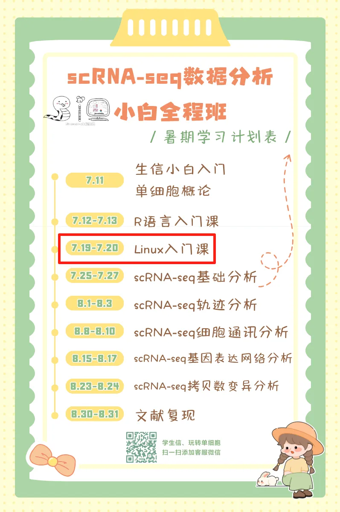
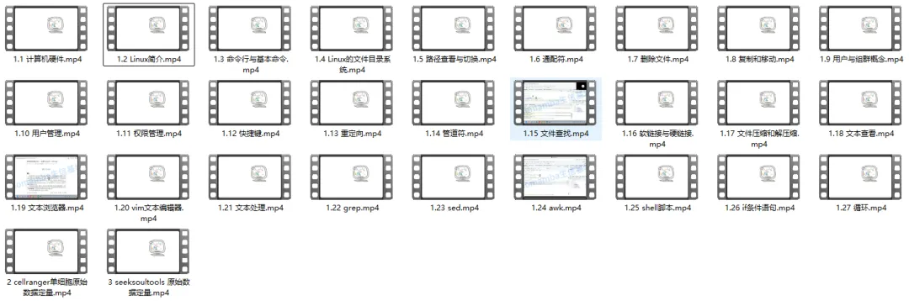
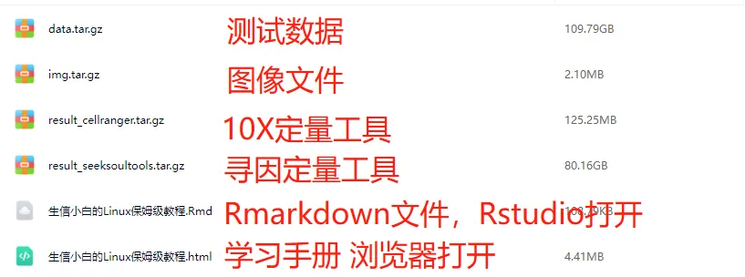

单细胞人的Linux课程
原文：https://mp.weixin.qq.com/s?__biz=MzAwMzIzOTk5OQ==&mid=2247530574&idx=1&sn=f7cb1b0a58c0ab1df6e0206ee4f85813&chksm=9b3c011eac4b8808f0a74741ee83601c0ec5efd2415bc522379644d1ca808774930a1d440488#rd 合集：单细胞教程全收录
图文教程
scRNA-seq小学期火热进行中，此前我们完成了针对单细胞的Linux入门课程。现对西柚云任意付费产品用户开放：联系客服微信Biomamba_yunying获取提取码https://pan.baidu.com/s/1q6aHNLB5dTY-rTc54hTDUw 本教程基于Linux环境演示，计算资源不足的同学可参考： 足够支持你完成硕博生涯的生信环境 独享服务器，生信分析不求人 RTX5090、4080S、5070显卡上机访问链接：https://biomamba.xiyoucloud.net/欢迎联系客服微信[Biomamba_zhushou]获取帮助

大家可以先放大图片看看课程目录：
我们后续也会推出更多的Linux与生信 相关教程，大家可以点击收藏方便持续关注：生信Linux及服务器使用技巧。
本文学习资料
| 课程时长目录：时长(时.分.秒) | 课程名称 |
|---|---|
| 00.37.35 | 1.1 计算机硬件 |
| 00.38.43 | 1.2 Linux简介 |
| 00.37.35 | 1.3 命令行与基本命令 |
| 00.11.38 | 1.4 Linux的文件目录系统 |
| 00.31.46 | 1.5 路径查看与切换 |
| 00.20.39 | 1.6 通配符 |
| 00.15.54 | 1.7 删除文件 |
| 00.17.55 | 1.8 复制和移动 |
| 00.08.36 | 1.9 用户与组群概念 |
| 00.32.35 | 1.10 用户管理 |
| 00.27.45 | 1.11 权限管理 |
| 00.09.46 | 1.12 快捷键 |
| 00.10.56 | 1.13 重定向 |
| 00.08.11 | 1.14 管道符 |
| 00.20.19 | 1.15 文件查找 |
| 00.15.35 | 1.16 软链接与硬链接 |
| 00.10.19 | 1.17 文件压缩和解压缩 |
| 00.05.34 | 1.18 文本查看 |
| 00.19.21 | 1.19 文本浏览器 |
| 00.29.25 | 1.20 vim文本编辑器 |
| 00.25.05 | 1.21 文本处理 |
| 00.06.55 | 1.22 grep |
| 00.14.40 | 1.23 sed |
| 00.31.15 | 1.24 awk |
| 00.17.45 | 1.25 shell脚本 |
| 00.12.59 | 1.26 if条件语句 |
| 00.11.16 | 1.27 循环 |
| 00.53.53 | 2 cellranger单细胞原始数据定量 |
| 00.30.22 | 3 seeksoultools 原始数据定量 |

视频回放：7月19-20日 Linux入门课
链接: https://pan.baidu.com/s/1q6aHNLB5dTY-rTc54hTDUw
测试文件: https://pan.baidu.com/s/1TC4l8GPFSIZso9_qDaM7pg
提取码可联系客服微信[Biomamba_zhushou]获取~
十小时学会Linux
我们B站上还为大家准备了十小时学会Linux
欢迎大家学习、三连：https://www.bilibili.com/video/BV1hT411F7r7?p=1
如何联系我们

 留一个领取资料、开箱即用的单细胞分析镜像的微信号[Biomamba_zhushou]，方便各位随时交流。同时我们也构建了交流群矩阵，欢迎大家入群讨论。
大家可以阅读完这几篇之后添加给生信入门初学者的小贴士
没有检索，就没有发言权
留一个领取资料、开箱即用的单细胞分析镜像的微信号[Biomamba_zhushou]，方便各位随时交流。同时我们也构建了交流群矩阵，欢迎大家入群讨论。
大家可以阅读完这几篇之后添加给生信入门初学者的小贴士
没有检索，就没有发言权
已有生信基地联系方式的同学无需重复添加

 您点的每个赞和在看，我都认真当成了喜欢
您点的每个赞和在看，我都认真当成了喜欢